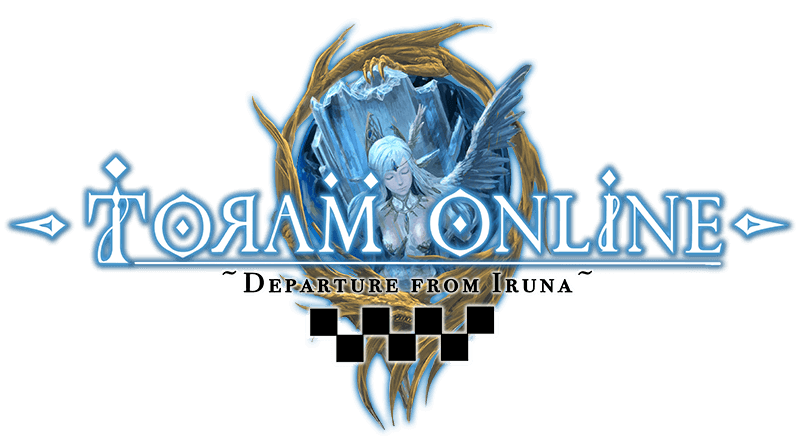
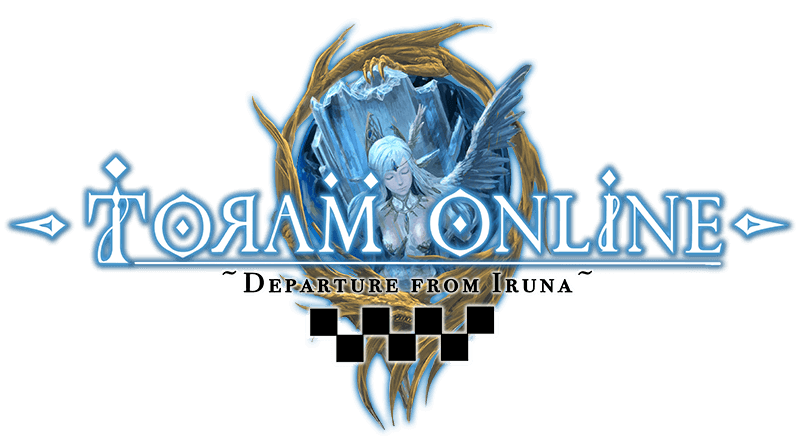

哈喽~大家好 我是夜夜(揮手 來找新王拍照
因應貓貓的要求我也來寫一篇關於弓手的文章啦~
不過我還玩沒多久所以並不是很清楚其他人是怎麼玩的
所以我就以我自己的腳色來做介紹，並解釋我點這些技能的理由
我會將內容分成3個大主題 弓手基本要點&150前和150後
原因是有了4階技能後的玩法會整個大改變~所以再用等級做個區分
＊另外提醒大家~這篇主要是針對"純弓手"不包含練匠的喔!
弓手基本要點
- 首先來介紹弓手會點的幾個能力!
- DEX:玩弓必點，點1增加3atk 通常都是先滿dex再考慮點其他的
- STR:對於輸出來說第二重要的能力，點1增加1atk 並增加少量爆傷
- CRT:增加爆擊率，主要是為了達到100%爆擊
- VIT:可以增加血量!!增加存活率!!活著才有輸出!!斟酌點一些就好
給大家參考我的配點~

我的弓手走的是極致輸出路線，所以並沒有點vit增加生存率
點滿DEX後，達成百爆需求就全部都點STR了
爆擊率
之前有人問過我爆率怎麼算，所以我就在這裡也順便說明一下~
公式是:暴擊率公式:（25+ CRT /3.4）*（100 + 暴擊率+N%）% + 暴擊率+N+ 技能補正
你說看不懂?沒關係!!我也看不懂
其實不難的啦~看我算一次就知道了!就拿我的小弓來舉例吧~
秘訣就是把"爆擊率+n"和"爆擊率+n%"分開
請看以下的裝備圖~


CRT為紅色
爆擊率+n%為橘色
爆擊率+n為藍色
所以我的爆率是 (25+4/3.4)*(100+15(法袍)+4(卦莫石))%+16(弓)+15(法袍)+20(帽子)+8(獅將石)+5(魔炮石)+5(好戰分子的爆擊率提升點滿)=100.15
剛好達到百爆~
基本裝備方向
弓手的優勢就在於靈活和射程，並且擁有瞬間的爆發力。為了讓這瞬間的傷害能提高，最基本的當然是提高底攻。再來就是爆擊傷害和爆擊率。
所以裝備的付魔基本上都是圍繞著"atk%"&"DEX%"&"爆擊率"&"爆擊傷害"這幾個數值 關於這方面可以參考上面爆擊率部分的裝備圖
另外，對於弓矢玩家來說。屬性矢是一個非常重要的裝備
有了相剋屬性就會有多15%的傷害，我不是很會算傷害頭會痛。但是我測試過用124攻無屬的矢打得並不會比5攻剋屬的矢打得還痛，由此可見屬性加成多麼的重要。所以要完弓務必要把6屬攻矢集齊
未來如果有預算當然可以再更進一步的製作對屬衣和對屬弓，不過那些裝備需要花費的眾神幣不是普通的多。所以慢慢來就好了。